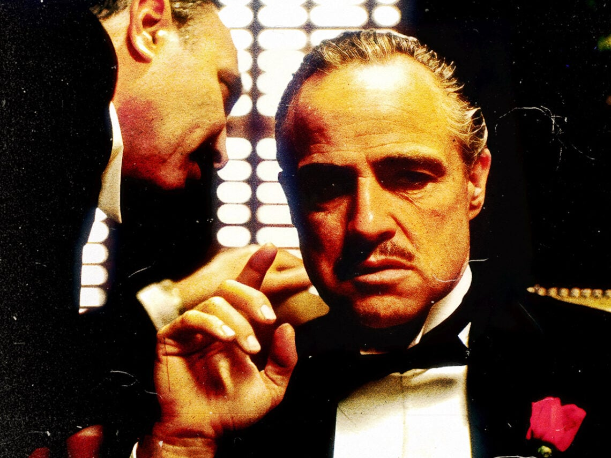

Electronics and Computer Science at UWI
September 21, 2025 by Nia Erskine

Electronics and Computer Science is currently a special degree programme offered at the University of the West Indies Mona.
This being a special programme a set 99 credits is required to graduate and all courses that can be done are laid out clearly in the university handbook including the possible electives that can be done.
The opportunity to do electives is only available to students in their 2nd or 3rd year of study as 1st year is centered around core foundational courses.
Once this programme is completed, an individual should possess skills in various coding languages such as python and javascript, database management and project management among other things.
This degree allows for future employment in a wider variety than some stand alone major such as software engineering, I can, as a graduate with this degree, can pursue electrical engineering, software engineering and tech development among other fields.
The possibilities for me at the end of this degree are endless and I hope that my future will be bright with this degree on hand
The Godfather
September 21, 2025 by Nia Erskine

The Godfather is hands down one of the greatest movies ever made, and it is so much more than just a gangster film.
What makes it incredible is watching Michael Corleone's transformation from a good guy war veteran into a ruthless crime boss. It is like a Shakespearean tragedy but with Italian-Americans in 1940s New York.
Marlon Brando absolutely kills it as the Don with that iconic raspy voice, and Francis Ford Coppola's direction is pure genius.
The cinematography is dark and moody, perfectly matching the moral complexity of the story. Every time I watch it, I notice something new, whether it's the amazing score or how the lighting literally puts characters in shadows to show their moral ambiguity.
It is not just entertainment it is a masterclass in filmmaking that explores themes of family loyalty, power, and how corruption can destroy even the best intentions.
If you haven't seen it yet, you're seriously missing out on a piece of cinema history.
If you are obsessed with The Godfather like I am, there are some other incredible films you absolutely need to check out.
Start with Goodfellas, Martin Scorsese's fast-paced, darkly funny take on mob life that feels like the perfect companion piece.
Then there's Scarface, which shows the rise and fall of a crime boss but with way more intensity and violence.
For something more recent, The Departed is a brilliant cat-and-mouse game between cops and criminals that'll keep you on the edge of your seat.
I do not thing anyone should sleep on Casino either, it has that same epic scope as The Godfather but focuses on the Las Vegas mob scene.